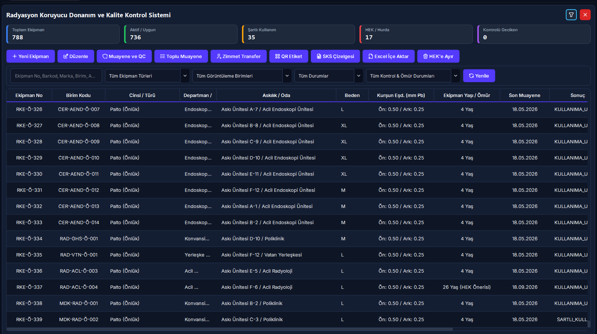
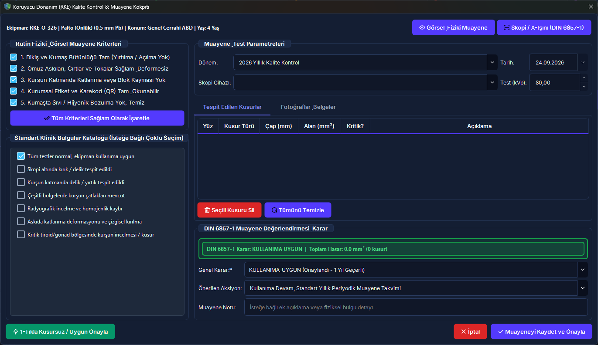

20. Radyasyon Koruyucu Ekipman (RKE) & DIN 6857 Kalite Kontrol Yönetimi
Radyoloji, nükleer tıp, kardiyoloji ve skopi ameliyathanelerinde kullanılan kurşun önlük, palto, etek-yelek, tiroid ve gonad koruyucularının yaşam döngüsünü, akıllı kodlamasını, fiziksel kontrollerini, skopi altındaki interaktif delik/çatlak krokisini, matematiksel karar motorunu ve Sağlık Bakanlığı SKS 6.1 resmi denetim çizelgelerini yönetin.
Kısa Reçete (20 Saniye Kuralı)
Tablodan ekipmanı seçin [Muayene Yap] butonuna basın Bütünleşik Kokpitte sol taraftaki dokunmatik krokiye tıklayarak kusurları pinleyin, sağ taraftaki 5 rutin fiziki kriteri onaylayın veya ekipman kusursuzsa doğrudan [1-Tıkla Kusursuz / Uygun Onayla] butonuna basın.
5N1K Kural ve Ayar Çözümleme Tablosu
Aşağıdaki tablo, koruyucu donanım yönetiminde kullanılan tüm operasyonel fonksiyonları, kısıtları, formülleri ve yetki sınırlarını teknik kod karmaşası olmaksızın açıklar:
Klinik Radyasyon Güvenliği & Mit Avcısı (Kritik Kurallar)
"Önlükte delik yok, dikişleri biraz açılmış ve kurşun katman hafif katlanmış; idare eder, ameliyatta giyilebilir."
Kurşun katmandaki blok kayması veya katlanmalar doğrudan korumasız radyasyon sızıntı koridorları açar. DIN 6857-1 standardı uyarınca kurşun blok katlanması veya blok kayması tespit edilen tüm koruyucular derhal HEK / Hurdaya ayrılmalıdır.
"10 yılı dolduran önlükler skopide kusursuz ve deliksiz çıksa bile sistem tarafından zorla çöpe atılır."
RADPYS'teki 10+ yıl uyarısı uluslararası malzeme yorulması ilkelerine dayalı bir Öneri & Dikkat Uyarısıdır. Skopi testinde deliksiz ve homojen olduğu kanıtlanan önlükler, kurum hekiminin ve medikal fizikçinin onayıyla hassas takip altında kullanılabilir.
"'Şartlı Kullanım' kararı alan önlüğü anjiyoda veya skopi eşliğindeki ortopedi cerrahisinde giyebiliriz."
Şartlı donanımlar (5-15 mm² delik veya toka hasarı olanlar) primer ışınlama konisi altında asla kullanılamaz. Bu önlükler yalnızca hasta yakını veya düşük saçılmalı refakatçi işlemlerinde kullanılmak üzere ayrı sarı askılıkta tutulmalıdır.
Tek Ekranda Bütünleşik Muayene ve Karar İş Akış Şeması
DIN 6857-1 / IEC 61331 Karar Motoru & Eşik Değerleri
RADPYS V4, skopi veya röntgen şutlaması altında yapılan kalite kontrol muayenelerinde medikal fizikçinin sübjektif değerlendirmesini ortadan kaldıran matematiksel bir karar motoru barındırır. Dokunmatik SVG tuvali üzerinde işaretlenen her deliğin çapı (d) girildiğinde sistem daire alan formülüyle hasar büyüklüğünü hesaplar:
- • Toplam hasar alanı ≤ 5.0 mm².
- • Kritik organ bölgesinde delik/çatlak YOK.
- • Kurşun blok katlanması veya kayması YOK.
- • Tüm klinik ve ameliyathanelerde serbest kullanım.
- • Toplam hasar alanı 5.0 – 15.0 mm² aralığında.
- • Veya dikiş/toka açılması mevcut.
- • Primer ışınlama alanında (Anjiyo, C-Kollu Skopi) YASAK.
- • Yalnızca hasta refakati ve düşük dozlu alanlarda.
- • Kritik organ bölgesinde > 0 mm² delik (Sıfır Tolerans).
- • Non-kritik alanda toplam hasar > 15.0 mm².
- • Kurşun blok katlanması veya blok kayması.
- • Önlük derhal klinikten çekilir ve imhaya sevk edilir.
Toplu Muayene Kokpiti & Zimmet Güvenlik Kilidi
1 Toplu Kalite Kontrol Kokpiti ([Toplu Muayene])
Hastanede 100'den fazla kurşun önlük bulunan merkezlerde her ekipman için ayrı form açıp kaydetmek saatler sürebilir. [Toplu Muayene] butonu ile:
- Gecikenleri Seç: Muayene tarihi yaklaşan veya günü geçen önlükleri tek tıkla otomatik işaretler.
- Tek Tıkla Toplu İşlem: Skopi cihazı, kontrol tarihi ve "Kullanıma Uygun" kararı seçilerek onlarca ekipmanın muayenesi tek tuşla sisteme işlenir.
2 Hurda Devir Güvenlik Kilidi ([Zimmet Transfer])
Koruyucu donanımlar personelin şahsına zimmetlenebildiği gibi birim ortak askılıklarına da atanabilir. Ancak hurda donanımların yanlışlıkla kullanıma sokulmasını engelleyen katı bir emniyet kilidi mevcuttur:
HEK_Hurda, Kayip veya Kullanim_Disi olan bir ekipman
seçilip transfer yapılmak istendiğinde sistem transferi engeller ve kaydetme butonunu kilitler.
Karekod (QR) Pasaport Etiketi & Mobil Saha Muayenesi
Her Önlüğe Benzersiz Dijital Pasaport
[QR Etiket] butonuna tıklandığında önlüğün teknik künyesini (Önlük No, Cinsi, Kurşun Eşdeğeri mm Pb, Beden, Konum, Son Muayene Sonucu) içeren kurumsal bir etiket üretilir.
- • Yazdır: Doğrudan klinik etiket yazıcısına gönderilir (Suya ve dezenfektana dayanıklı kumaş etiketler tavsiye edilir).
- • PNG Olarak Kaydet: Yüksek çözünürlüklü dijital görsel olarak arşivlenir.
- • Mobil Saha Muayenesi: Sahada çalışan medikal fizikçi cep telefonu veya tablet kamerasıyla önlükteki QR kodu tarattığında web portal açılır; cihaz başından ayrılmadan dokunmatik kroki üzerinde delikleri işaretleyip canlı kamera fotoğrafı ekleyerek testi onaylayabilir.
Arayüz Rehberi & Ekran Görünümleri


Sıkça Sorulan Sorular (SSS)
1. Muayenesi yaklaşan veya geçen önlükleri ana ekranda nasıl hızlıca filtreleyebilirim?
Filtre çubuğundaki [Tüm Kontrol & Ömür Durumları] açılır kutusundan "Kontrolü Gecikenler" seçildiğinde süresi dolmuş kırmızı alarmlı kayıtlar; "Kontrolü Yaklaşanlar (30 Gün)" seçildiğinde ise son 30 günü kalan donanımlar listelenir. Ayrıca tablonun en üstündeki "Kontrolü Geciken" KPI kartına tıklayarak da anında erişebilirsiniz.
2. Tiroid veya gonad koruyucuda milimetrik dahi olsa delik çıkarsa ne yapılmalıdır?
DIN 6857-1 standardı uyarınca tiroid ve gonad bölgeleri doğrudan kritik organları koruduğu için tolerans sıfırdır (0.0 mm²). 1 mm dahi delik tespit edilse ekipman kesinlikle şartlı kullanılamaz; doğrudan HEK / Hurdaya Ayrılmalı kararı verilerek derhal hizmetten çekilmelidir.
3. Hurdaya ayrılan bir önlük listede kalmaya devam eder mi, kazara tekrar kullanılabilir mi?
Hurdaya ayrılan önlükler geçmiş denetim izlerinin korunması amacıyla sistemde silinmez; ancak durumu kırmızı "HEK (Hurda)" olarak işaretlenir. Aktif envanter listesinde ve SKS çizelgesinde kullanım dışı görünür. Ayrıca bu önlüklerin başka personele devredilmesini engelleyen Hurda Devir Güvenlik Kilidi devreye girer.
4. Muayeneye eklenen hasar fotoğrafları ve skopi röntgenleri nereye kaydedilir?
Yüklenen görsel ve PDF servis belgeleri masaüstündeki açık klasörlerde korunmasız tutulmaz. Form kaydedildiği anda KVKK uyumlu Evrak Kasasında Fernet AES-256 algoritmasıyla şifrelenerek PostgreSQL veritabanı blob alanında saklanır. Yalnızca yetkili kullanıcılar detay ekranından deşifre ederek görüntüleyebilir.
5. Bir RKE donanım tanımını (tür/kategori) sildiğimde mevcut önlük ve ekipmanlar kaybolur mu?
6. Yıllık muayenede hurdaya ayrılan 15-20 adet kurşun önlüğü tek bir resmi tutanakta nasıl birleştirebilirim?
RADPYS V4.0.3.0 ile gelen çoklu seçim desteği sayesinde, RKE envanter tablosunda hurdaya sevk edilecek ekipmanları klavyeden Ctrl veya Shift tuşuna basarak topluca seçebilirsiniz. Ardından üst araç çubuğundaki [HEK Tutanağı] butonuna veya sağ tık menüsündeki "Seçili Ekipmanlar İçin Toplu HEK Tutanağı Oluştur..." seçeneğine tıklayın. Sistem doğrudan Tutanak ve Matbu Evrak Sihirbazı'nı açar; seçilen 20 ekipmanın künye, seri no, marka ve kusur bilgilerini tek bir tablo halinde resmi Word (.docx) HEK komisyon şablonuna otomatik olarak işler.
7. Hastanedeki yüzlerce kurşun önlük ve koruyucu ekipmanın QR etiketlerini dış matbaada veya profesyonel etiket makinesinde topluca nasıl bastırabilirim?
RKE Envanter tablosu üst araç çubuğundaki [Toplu QR Etiket İhracı] butonuna tıklayın veya dilediğiniz ekipmanları seçip sağ tıklayarak "Toplu QR Etiket Paketi (.ZIP)" komutunu çalıştırın. Sistem arka plan iş parçacığıyla seçilen ekipmanlar için 300 DPI (800x1050 px) yüksek çözünürlüklü PNG etiketler, matbaa ve etiket üreticisine doğrudan iletilebilecek PVC/PET medikal malzeme teknik şartnamesi (00_Baski_ve_Uretim_Rehberi.txt) ve tüm ekipmanların künye/kurşun eşdeğeri dökümünü içeren 00_Etiket_Listesi_Icmal.csv dosyasını tek bir .ZIP arşivi halinde kaydeder.